2026 Bandolero season highlights from Wake County Speedway — from cold winter practice and the Bull Bash, to back-to-back Beginner wins, the move up to Outlaw, and championship night.
Swipe or use the arrows. 15 slides, from last winter to the 2027 Bull Bash.
1 / 15
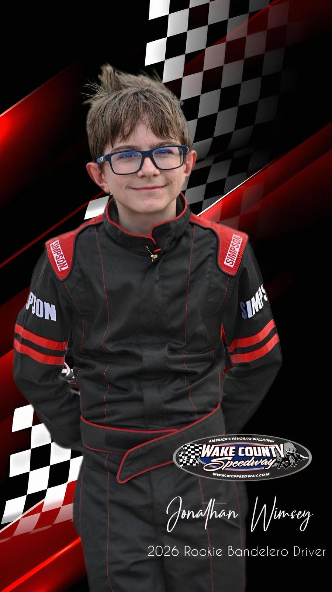
2026
Jonathan Wimsey · #64W
A rookie Bandolero season at Wake County Speedway — starting in Beginner and finishing in Outlaw.
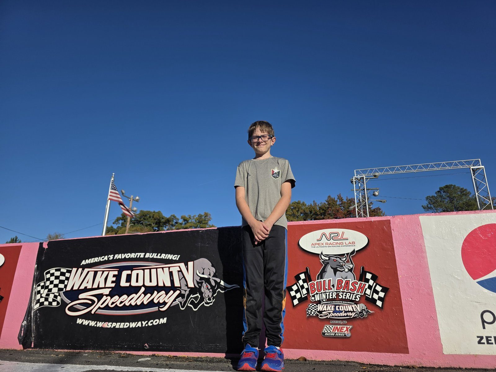
Winter
It started on cold days
Thank you to Bill and Andrew Tyree for opening the track so we could practice on those cold days last winter.
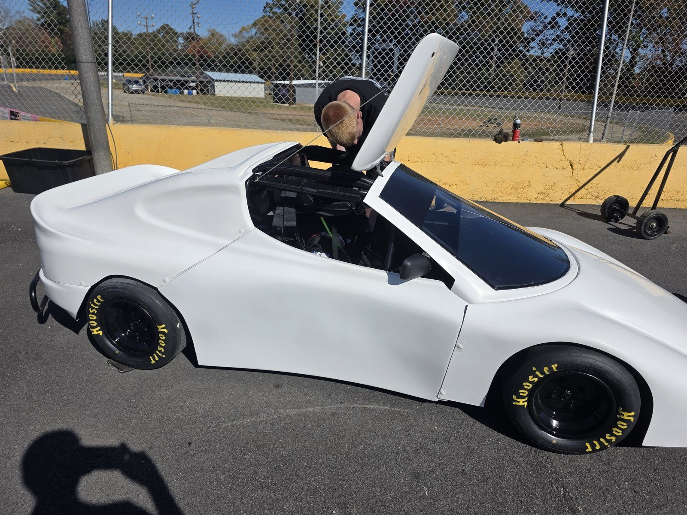
Winter
Learning how it all works
The car was still white and there was a lot to figure out. Every cold practice day counted.
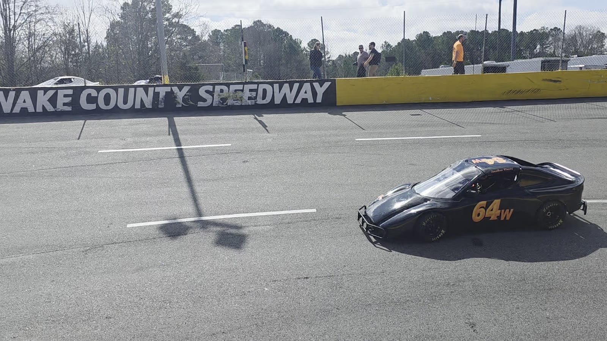
Feb–Mar
Bull Bash Winter Series
Four starts in Beginner, with a 4th-place finish on March 21 — the first top-5.
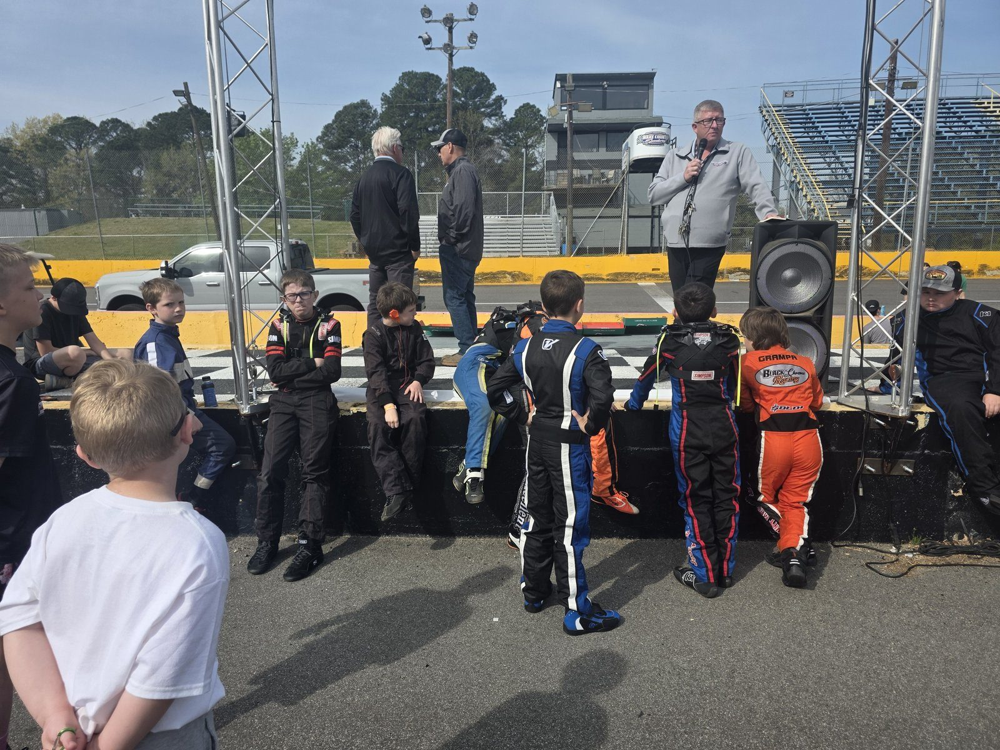
Friends
Friends in Beginner
Thank you to all the Bandolero teams who raced with us, welcomed us, and helped us learn.
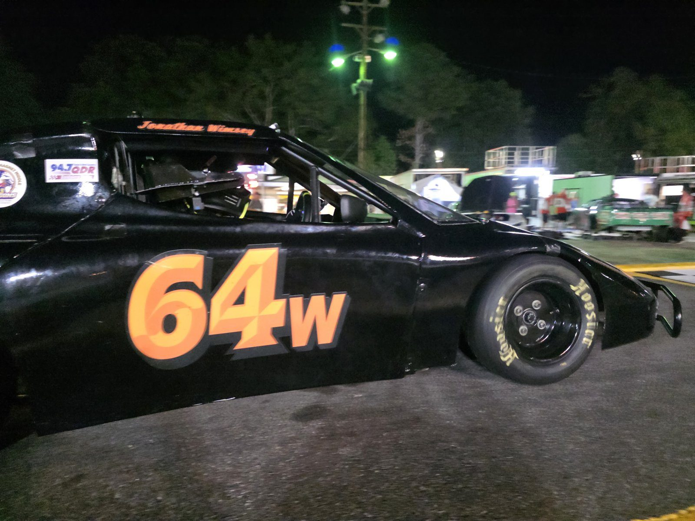
July 10
First win
Beginner feature win at the Simpkins Garage 170.
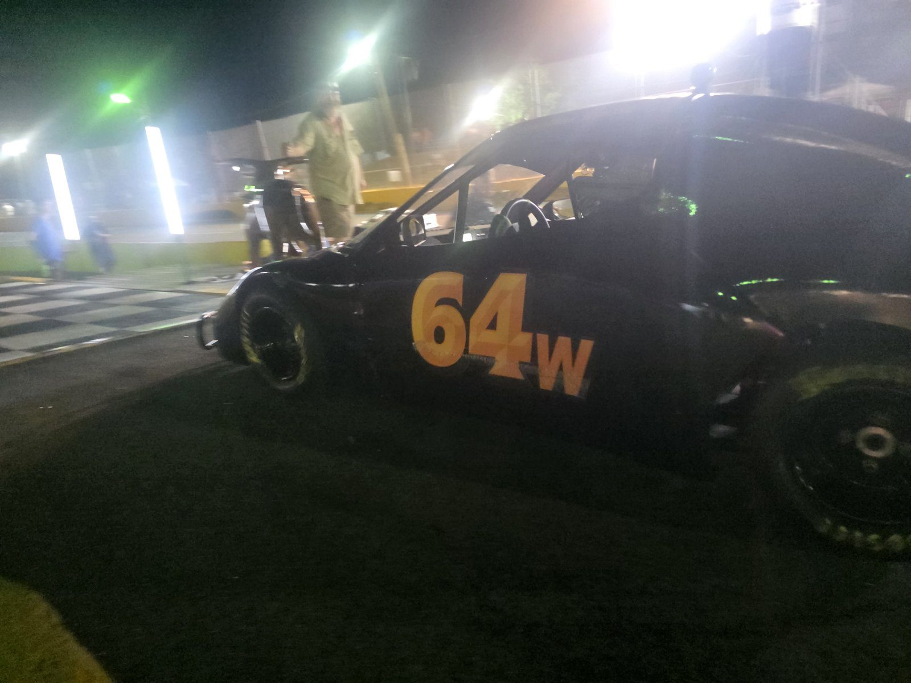
July 17
Back-to-back
Started on the pole and won again the very next Friday at the Swift Creek 175.
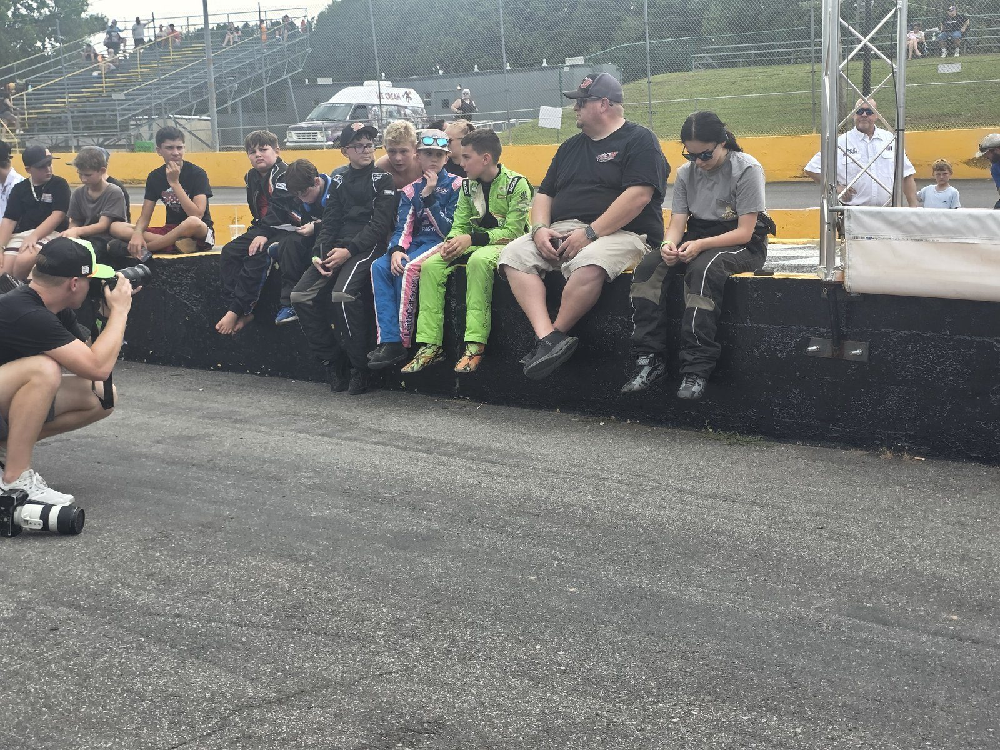
August
Moving up to Outlaw
After the Beginner wins, Jonathan moved up. First start in the new class: started 7th, finished 6th.
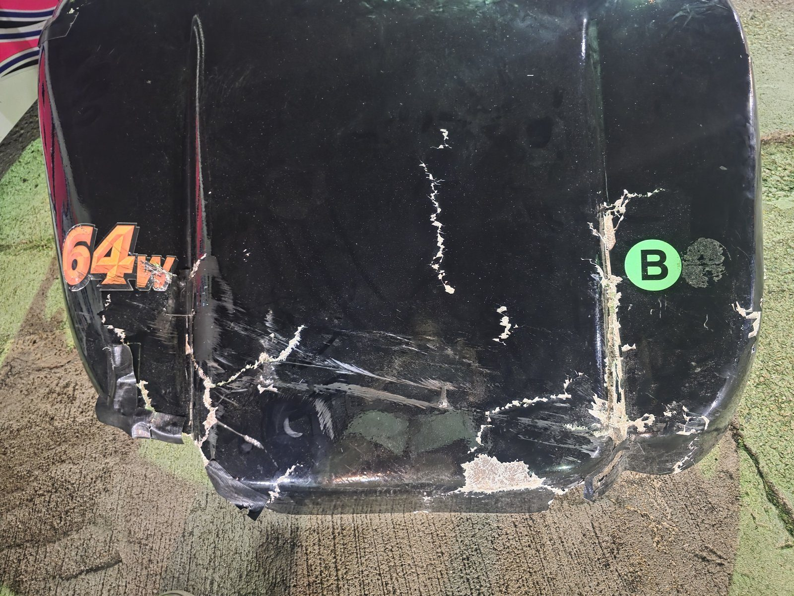
September 18
The wreck
Qualified P3 and turned sub-15-second laps, then went too low across the apron on lap 11, looped, and was hit. All drivers walked away. Thank you to Andrew Tyree, Charlie Hansen, and all the track staff and EMS who were there instantly to check on the kids.
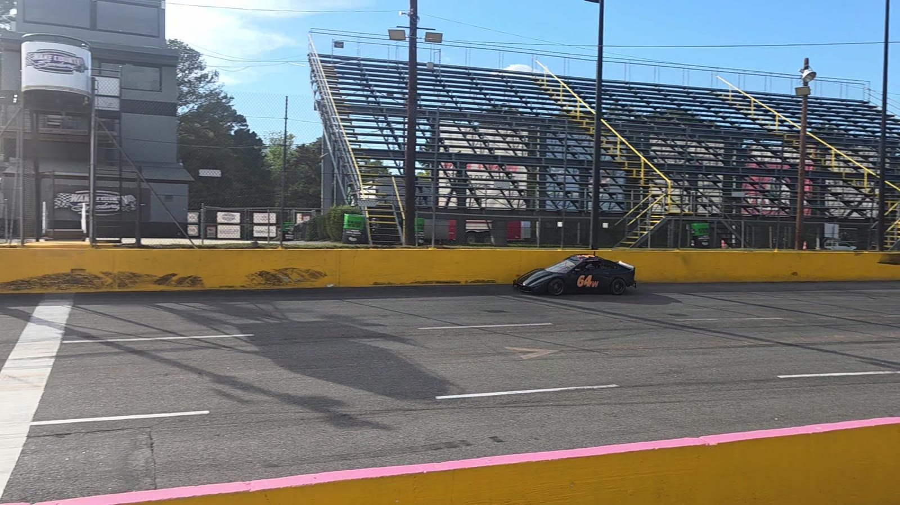
The bounce-back
Friends put it back together
The track family started figuring out the repair that same night — thank you Noah “Buddy” Haislip, Chad Williams, Heather and Tony Rodriquez, and the Chriscoe crew. The car was back together for championship night.
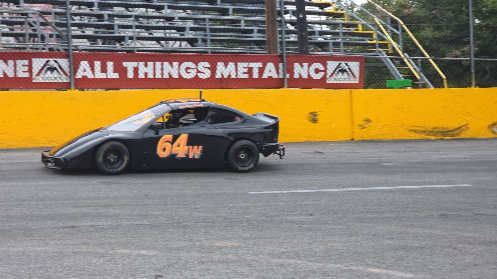
October 9
Championship afternoon
Back on track in the rebuilt car, and qualified 3rd.
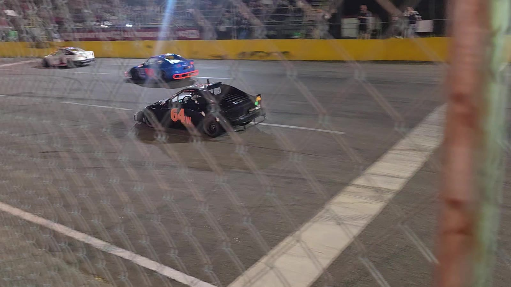
October 9
Championship night
Started 3rd and finished 6th in the Capital 170 championship feature under the lights.
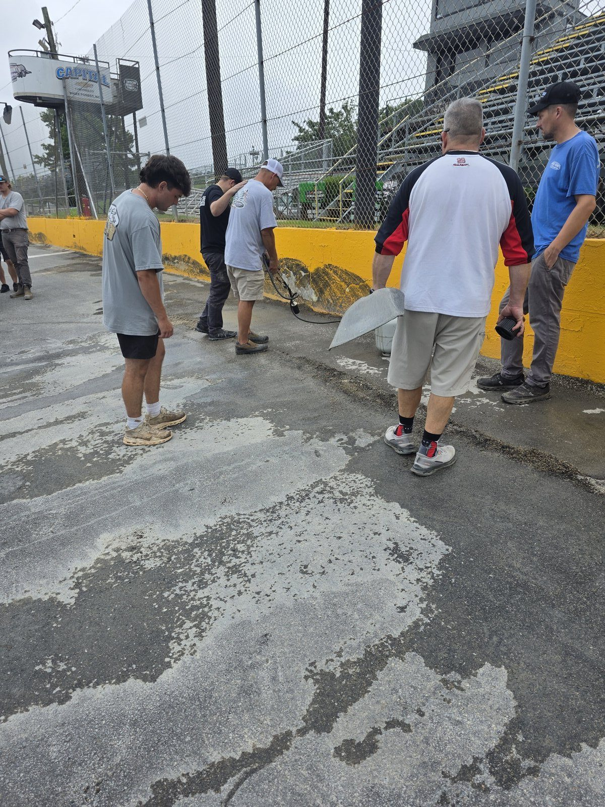
Thank you
Wake County Speedway staff
Thank you to all the WCS staff for being welcoming and helpful, and for putting up with us learning how it all works.
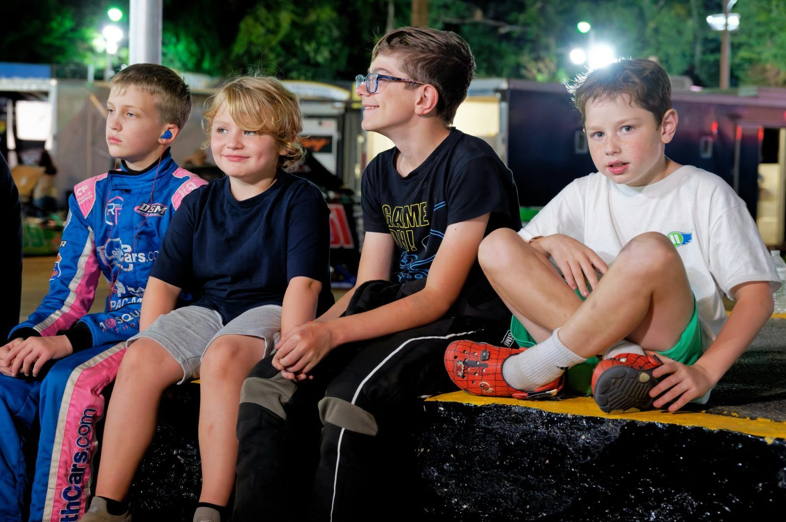
Thank you
Our racing family
Thank you to the Haislips — Carson and Noah — to William Brown for always having kind, supportive words and welcoming Jonathan, and to every Bandolero team in Beginner and Outlaw.
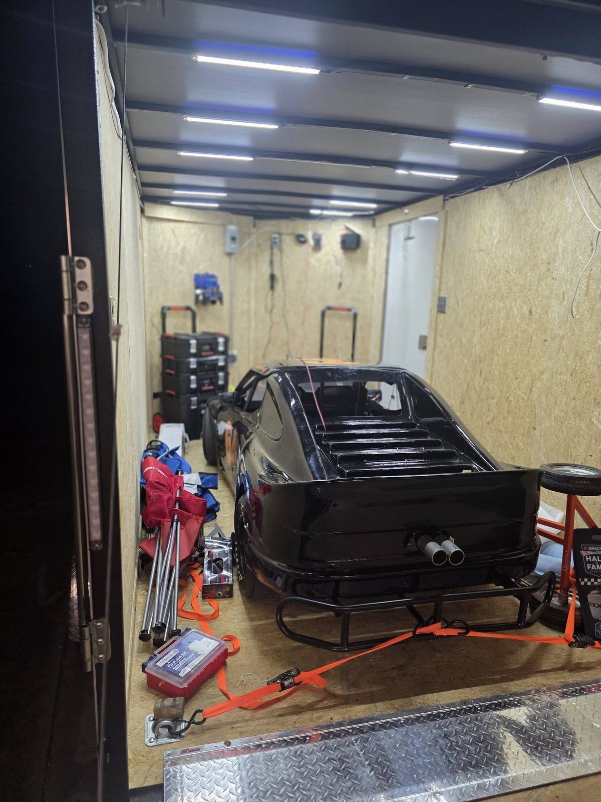
2027
See you at the 2027 Bull Bash
We’re excited for the 2027 Bull Bash and already preparing the car.
Photo gallery
27 photos from the 2026 season. Tap any photo for the full size.
Official-style driver portrait (J&DMotorsports; file date May 6, 2026 — not a race night) Official-style portrait of Jonathan in his black-and-red Simpson suit, Wake County Speedway logo, lettered “Jonathan Wimsey / 2026 Rookie Bandelero Driver” (spelling as on the card).Winter practice, November 4, 2025 — first documented session Jonathan standing in front of the “America’s Favorite Bullring” wall, with the Bull Bash Winter Series / ARL / INEX logos and the flag under a clear blue sky.
Winter practice, November 4, 2025 First winter-practice morning: person beside the still-white car in the pits.Winter practice, November 4, 2025 The car is still white, hood/canopy up, an adult working in the cockpit in the pits.
Bull Bash, February 28, 2026 Bronze bull trophies on the table at the Feb 28 Bull Bash (the plate in front reads “WINNER”).Bull Bash, March 21, 2026 — finished 4th in Beginner Drivers’ meeting on the start/finish stand, Bull Bash day Jonathan finished 4th in Beginner.
July 10, 2026 — first Beginner feature win (started 1st) Full 3/4 of the black #64W in the pits, Jonathan in the car, “Jonathan Wimsey” on the roof rail, grandstand behind.
July 10, 2026 — first Beginner feature win #64W under the lights, coming off the track with other Bandoleros behind and a crowd in the infield.July 10, 2026 — first Beginner feature win Side-on hero of #64W under the lights: orange 64W, “Jonathan Wimsey” above the door, Hoosier tire.
July 17, 2026 — back-to-back Beginner feature win Daylight view of the start/finish checkers before the July 17 program.July 17, 2026 — back-to-back Beginner feature win #64W on the checkered start/finish under the lights the following Friday.August 14, 2026 — Pepsi 175, first later-class start found (started 7th, finished 6th) A line of Bandolero kids in their suits sitting on the pit wall, a photographer shooting them, an official in white, families behind.
September 18, 2026 incident (still saved September 21 in the J&D folder) Night still of a Bandolero apparently getting crossed up or hooked, packed grandstand.September 18, 2026 — after the lap-11 incident Close-up of the damaged #64W body after that night.Championship night, October 9, 2026 — qualified 3rd, finished 6th #64W in profile on the yellow-wall front stretch in afternoon light.
Championship night, October 9, 2026 — feature under the lights, finished 6th #64W racing at night, another car trailing, shot through the catch fence.July 24, 2026 — wet start; WCS crew drying the track Overcast, wet pit-road pavement, several people (track/crew) standing in the puddles with a squeegee and pan, working the surface.
July 24, 2026 — wet start; WCS crew drying the trackFriends on the pit wall (J&DMotorsports; file saved October 12, 2026 — exact race night not confirmed) Signature friends frame.The Bandolero in the trailer (J&DMotorsports; file date May 6, 2026) The black Bandolero strapped into the enclosed trailer, tools and ties around it.
Race clips
35 short clips from winter practice through championship week. The July win nights are told in photos, and the September 18 wreck is included as the bounce-back moment.
Winter practice
W1 White Bandolero alone on a nearly empty winter bullringW2 First documented winter-practice day — white car on the empty trackW3 New Year’s Day practice, white car on the front stretchW4 Hood up — mechanical work on the still-white carW5 Bandoleros on track, practice just before Bull BashW6 Hands-on engine work
Bull Bash Winter Series
B1 Bull Bash — #64W close along the pink/yellow wallB2 Bull Bash — #64W through the catch fenceB3 Bull Bash — close #64W under the Wake County Speedway bannerB4 Studio portrait session — Jonathan in the black-and-red suitB5 Bull Bash — close #64W with an official, late in a long pit/track takeB6 Bull Bash feature day (4th in Beginner) — black Bandolero and an official at start/finish
July wins
R11 Jul 17 (back-to-back Beginner win) — afternoon #64W, not victory lane
Moving up
R1 Apr 3 — “Jon’s Battle” 4K highlight (filed under Apr 5)R2 Apr 3 — daylight Bandoleros on the front stretchR3 Apr 17 — short daylight pass, black BandoleroR4 Apr 17 — night pack along the wallR5 May 8 — close #64W along the pink wall, checkers in the foregroundR6 May 8 — evening pack through the catch fenceR7 Jun 5 — black Bandolero through the corner, empty standsR8 Jun 12 — night pass at start/finishR9 Jun 19 — daylight black Bandolero on the front stretchR10 Jun 19 — dusk, Bandolero rolling with a pink-and-orange skyR12 Aug 21 — overcast daylight, black Bandolero in the cornerR13 Aug 21 — start/finish checkers, bull under a tarpR14 Sep 4 — the bull on the checkers, then a black Bandolero passR15 Sep 4 — black Bandolero along the restart-zone wallR16 Sep 11 (finished 6th) — dusk pass, likely #64W
September 18: wreck and rebuild
R17 Sep 18 (qualified P3) — the bull, then a black Bandolero passS18 Sep 18 — lap-11 spin/contact, turn-4 camera
Championship night, October 9
C1 Oct 8 practice — #64W coming toward the tower (car back together)C2 Championship afternoon — #64W across the restart zoneC3 Championship afternoon — closer #64W along the yellow wallC4 Championship feature — close night pass, #64W clearly lettered
Thanks & friends
R18 Sep 18 — cheer/community in the pits, #64W in the background